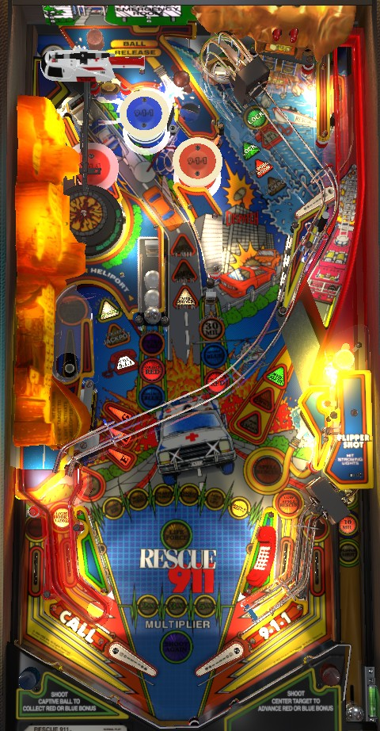

Start modes as often as possible by shooting the Helipad hook lane on the left or the upkicker in the top right when Call 9-1-1 is lit. During modes, shoot whatever is flashing to earn Lives; the callouts and dot display are not helpful for telling you what you need to do. Earning 50 or 120 Lives lights the right ramp for Lifeforce or Super Lifeforce wizard modes respectively; again, shoot flashing shots to complete. Multiball is started by locking 2 balls at shots lit for Lock in the upper right of the playfield; in multiball, the Helipad hook lane raises the jackpot, and the Emergency Room lane near the top upkicker scores and doubles the jackpot up to 300,000,000.
The below picture of Rescue 911's playfield was taken from the VPX recreation by Antisect.

Three lights cycle in the shooter lane. When you plunge, the ball is fed directly to the lower right flipper, and the lit shooter lane award is given. Advance Multiplier advances the bonus multiplier in the sequence 2x-3x-5x; 10 Mil gives 10,000,000 points; Flipper Shot will flash either the captive ball, the center standup target, or the pop bumper lane, and hitting the flashing target before hitting any other switch scores 20,000,000 points. Advance Multiplier is usually the best option, followed by the 10,000,000.
There are 6 main modes as well as Lifeforce wizard mode. Lives are a pseudo-currency earned for making progress in modes. Lifeforce wizard mode is not dependent on playing all 6 main modes; it is only dependent on the number of Lives you have earned. Reaching 50 Lives will light the right ramp for Lifeforce the next time there is no mode or multiball running, and reaching 120 Lives will light the right ramp for Super Lifeforce the next time there is no mode or multiball running. The two versions of Lifeforce can only be played once per game each, and you're out of luck if you do not succeed at them. The maximum number of Lives you can earn is 255.
Making a shot lit for Call 9-1-1 starts the currently flashing mode. Call 9-1-1 can be lit at the Helipad hook shot or the top right upkicker. The only way to change which mode is flashing is by pressing the flipper buttons when there is a ball in the shooter lane waiting to be plunged, either at the start of your turn or after a lock. All 6 main modes must be played once before any main modes can be replayed. For the first time through the modes, the Helipad will always be lit for Call 9-1-1. After all 6 modes have been played at least once each, pop bumpers and slingshots will alternate whether the Helipad or the upkicker is lit for Call 9-1-1.
If a mode is started at the Helipad and the Helicopter is lit, the helicopter toy will pick up the ball and fly it toward the back of the game. You can press the flipper buttons to drop the ball. There are 2 dropoff points: one in the pop bumpers, and one in a hidden hole behind the pop bumpers. Dropping the ball in the hidden hole will score 1 Life, or give credit for an Emergency Room shot if the Emergency Room is required for the mode you just started. If you do not press the flippers to drop the ball off the helicopter, it will swing all the way around and drop the ball onto a habitrail toward the left flipper. If the Helicopter is not lit, shoot the K target in the E-K-G bank of the lower left to relight it; if you start a mode at the Helipad and the Helicopter is not lit, the ball will just be kicked out of the Helipad normally. During your first time through the 6 main modes, the Helicopter will always be lit. The Helicopter will also always be lit at the start of a ball unless both 1) you have played all 6 main modes at least once each, and 2) Stork EB is the selected mode when you plunge the ball.
All main modes last for 15 long seconds, which is actually closer to 30 real seconds, unless the mode is completed. The 6 main modes are as follows:
When you complete all 6 main modes, the Dispatch target- shootable by the upper flipper, just to the left of the Emergency Room lane- will be lit for the rest of the ball. This target awards 1,000,000 points and 2 Lives when lit.
When you reach 20 Lives, as well as immediately after completing a set of the 6 main modes, the center standup target will be lit for 30,000,000 points for about 15 seconds. There is no audio or display cue for this, so you pretty much have to know it's coming, especially if you're playing a mode that uses the center standup target.
When you reach 35 Lives, the captive ball is lit for extra ball for about 15 seconds. Like the 30,000,000 target, there is no audio or DMD cue for this.
When you reach 50 Lives, Lifeforce is qualified. The next time there is no mode or multiball running, everything will unlight on the playfield except for the right ramp. Shoot it to start Lifeforce. This mode gives you 30 long seconds (it's really closer to a minute in real time) to shoot the following 6 shots: any E-K-G target, the Helipad, the captive ball, the center standup target, the right ramp, and the Rescue target in the lower right. Hitting any of these targets scores 1,000,000 points and unlights it. Making all 6 shots scores 300,000,000 points and immediately returns you to normal play.
When you reach 120 Lives, Super Lifeforce is qualified. Super Lifeforce works the same as regular Lifeforce, with two differences: there is a 7th shot (the Emergency Room), and completing all 7 shots within the 30-long-seconds time limit scores 1,000,000,000 points instead of 300,000,000.
If you do so well in a single mode or multiball that you go from less than 50 Lives to more than 120 without ever being in single-ball, non-mode play, Lifeforce no longer works properly. When you do get around to playing Lifeforce, the game will give you all 7 shots to hit as though you are in Super Lifeforce, but the completion bonus will only be 300,000,000, as though you were in regular Lifeforce. Further, in this state, it will become impossible to play the actual Super Lifeforce, so the chance at 1,000,000,000 points is lost. This is typically something you would need to go out of your way to try to do, but it's worth being mindful of all the same.
As part of the end of ball bonus on the final ball of the game, you receive 100,000 points times the bonus multiplier for each Life you earned over the course of the game. If you end the game with a 5x bonus multiplier and the maximum of 255 Lives, you will get an additional 127,500,000 points at the end of the game. Other than building this bonus, Lives become relatively useless after Super Lifeforce is played. Jaws of Life will still be able to give pretty good points and Stork EB will still be able to give an extra ball, but the other main modes are not worth prioritizing late in the game.
An unused voice clip within the game's files features the male announcer voice for Lifeforce stating "You doubled your score!". It may be possible under some settings or on some code versions of Rescue 911 to have the Lifeforce award be double-your-score instead of 300,000,000 or 1,000,000,000 points.
There are 2 ways to start multiball:
At the start of multiball, the Jackpot is 10,000,000 points and can be collected at either the Helipad or the Emergency Room lane. Collecting a Jackpot from either location increases the Jackpot to 20,000,000 points and changes the Helipad from Collect Jackpot to Advance Jackpot. From this point on until multiball ends, the Helipad will add 10,000,000 points to the Jackpot, while the Emergency Room lane will score the Jackpot, then double the Jackpot, then reset the Jackpot to 300,000,000 points if it would have exceeded that amount. The Jackpot can still be raised higher than 300,000,000 by shooting the Helipad, but it will never by higher than 300,000,000 after it is collected. Score as many Jackpots as you can before single ball play resumes. It is also possible to start and play main modes while multiball is running, though Lifeforce wizard mode cannot be started until there is one ball in play.
It's fairly easy to find a repeatable rhythm in this multiball; all you have to do is shoot the right ramp to catch a ball on the upper right flipper, then catch a second ball on the lower left flipper. This allows you to cycle balls around the table: left flipper -> right ramp -> upper right flipper -> Emergency Room lane -> left flipper, and repeat.
If you have not played Cave-in Rescue or Jaws of Life yet and shoot a Call 9-1-1 shot when either of those modes are selected, the ball will be locked, and the mode will be played as a quick multiball with 2 balls in play (or 3 balls if there was already 1 ball locked by conventional means). If you have already played Cave-in Rescue and Jaws of Life in their entirety earlier in the game, starting these modes again will not trigger a quick multiball.
There is an exploit that can be performed so that all modes are played as multiball their first time through, not just Cave-in Rescue and Jaws of Life. First, have Cave-in Rescue or Jaws of Life be your selected (flashing) mode. Then, shoot the lit Call 9-1-1 shot, which will lock a ball. Finally, before plunging the new ball you are served, press the flipper buttons to select a mode other than Cave-in Rescue or Jaws of Life. This will cause whatever mode you selected to be played as a multiball, and the quick multiballs for Cave-in Rescue and Jaws of Life will not be used up since those modes weren't actually played. Done to an extreme, this exploit allows all 6 modes to start multiball the first time you play them.
A mode cannot be started while another mode is running.
Locks can only be made for multiball when no mode is running, so by extension, you cannot start multiball during a mode.
Multiball and a non-Lifeforce mode can be started at the same time, either by playing Cave-in Rescue or Jaws of Life for the first time in a game, or by using the exploit described above.
Any non-Lifeforce mode can be started during multiball.
Multiball and modes run completely independently. There is no distinction between a multiball that is started by locking 2 balls or a multiball that is started alongside a mode. Modes can be started and played out at any time; the Jackpot rules are always the same whenever there are 2 or more balls on the playfield.
There is no grace period, ball save, or quick multiball restart at the end of multiball.
It is possible to plunge at the beginning of a ball, start a (single-ball) mode, and drain before the ball save timer ends. If this happens, you do get the ball back, but the mode you started instantly ends.
Both the Red and Blue bonuses start each ball at 3,000,000 points. Shooting the center standup target adds 3,000,000 to whichever bonus is lit (red or blue), and shooting the captive ball collects whichever bonus is lit. Both the captive ball and the center standup target will be lit for the same colour, and they alternate between red and blue on their own every few seconds. Each bonus, red and blue, can be independently built up to a maximum of 60,000,000. Collecting a colour bonus does not reset it, so if (for example) you get both bonuses up to their maximum, every shot to the captive ball will be worth 60,000,000 points for the rest of the ball. There is no way to collect the red and blue bonuses other than the captive ball, and their values always reset to 3,000,000 each at the start of each ball.
The pop bumper bonus starts each ball at 0 points. Hitting a pop bumper or the white standup target near the pop bumper nest adds to the bonus, but only during single ball play and only if Hostage Rescue mode is not running. By default, each pop bumper or white target hit adds 100,000 points to the bonus. Completing the E-K-G lower left targets or hitting the standup behind the top right drop targets increases the value of each bumper to 500,000 for 15 seconds. Completing E-K-G or the top right standup again within those 15 seconds increases the pop bumper value to 3,000,000 for 15 seconds. The pop bumper bonus cannot be greater than 100,000,000 points; if hitting a bumper would cause the bonus to exceed 99,900,000, that bumper will simply not contribute to the bonus.
Bonus multiplier is advanced in the sequence 2x-3x-5x by hitting the Advance X target in the lower left when it is lit. The target toggles being lit or not with bumper or slingshot hits.
The full bonus, including multiplier, is collected at the end of the ball and by making any mode shot during Wildfire mode. There is no way to hold the bonus or multiplier from ball to ball.
Med-Alert is this game's mystery award. Med-Alert is lit at the start of each ball or immediately after a main mode has been played. When the right ramp is lit green for Med-Alert, a post will block the ball when the ramp is made to allow the award to be given. Possible Med-Alert awards include:
This list may not be exhaustive.
Making the right in lane at any time lights the lower left target for Rescue. Once the target is lit, hitting it will award a letter in Rescue, and that target stays lit until Rescue is spelled. Spelling Rescue lights the right ramp orange for Player's Choice. Making the ramp when it is lit for Player's Choice gives you the option: press the left flipper to earn 5 Lives, or press the right flipper to start a Super Countdown, which counts down from 50,000,000 and is collected at the upper right standup target behind the drops.
In non-mode single ball play, the left in lane lights the right ramp for Hook & Ladder. Making the right ramp without registering any switches in between awards a letter in Hook & Ladder (the & counts as a letter, so there are 11 letters in total). Hook & Ladder letters can also be advanced by a Med-Alert mystery award or at the end of the game. On default settings, Hook & Ladder is a carryover award, but in tournament mode, each person has their own set of letters, with Hook & L spotted at the start of the game. Spelling Hook & Ladder in full starts Hook & Ladder Multiball. This is a 2-ball multiball, unless one ball had already been locked, in which case it will become 3-ball. During Hook & Ladder Multiball, all switches add 3,000,000 points to the Hook & Ladder Bonus. The Hook & Ladder Bonus starts at 30,000,000 points each ball; if you play Hook & Ladder multiple times in one ball, you will continue building your bonus where it was left off from the previous Hook & Ladder Multiball. I believe the Hook & Ladder bonus maxes out at 300,000,000 points, but have not verified this. The Hook & Ladder Bonus is awarded alongside the end of ball bonus on any ball where Hook & Ladder Multiball was played, and is not affected by bonus multiplier.
Locking a ball for standard multiball at the Emergency Room lane also gives a Progressive Award. The first two Progressive Awards on a ball are always 2,000,000 and 5,000,000 points. If no extra balls have been earned in the game so far, the third Progressive Award will light an extra ball at the captive ball for 15 seconds, and all Progressive Awards starting with the 4th give 10,000,000 points. If at least one extra ball has been earned, the hurry-up extra ball award is skipped, and all Progressive Awards starting with the 3rd give 10,000,000 points.
Rescue 911 has a conventional in/out lane setup. Rather than being perfectly vertical, the in lanes are slightly slanted so that the ball moves toward the middle of the table as it goes down the in lane. In non-mode, single-ball play, the left in lane lights the right ramp for a Hook & Ladder letter and the right in lane lights the lower right target to spot Rescue letters. Out lanes can be lit for Special by earning the Light Special mystery award from Med-Alert.
The base bonus is the pop bumper bonus, which is advanced as described in a previous section. Bonus multiplier is advanced in the sequence 2x-3x-5x by shooting the lower left Advance X standup target when lit. End of ball bonus on most balls consists only of the pop bumper bonus times the earned multiplier. If Hook & Ladder was played on a ball, the Hook & Ladder bonus is also scored at the end of that ball, and is not affected by bonus multiplier. At the end of a game, players earn 100,000 points times their final ball's bonus multiplier for each Life they earned over the course of the game, so take extra care not to tilt on the final ball or any ball where Hook & Ladder was played.
| If you need... | Try... |
| 10,000,000 points | shooting the ball into the pop bumpers a couple times to build your bonus, or starting multiball and earning a single jackpot. |
| 50,000,000 points | making a few shots in Jaws of Life mode or earning multiple jackpots in one multiball. |
| 300,000,000 points | playing a long multiball with the goal of earning a maximum jackpot (usually requires 4-5 jackpots) or reaching 50 Lives to play Lifeforce wizard mode (usually requires playing all 6 modes once, which can happen surprisingly quickly). |
| 1,000,000,000 points or more | focusing exclusively on multiball to play it is often and for as long as possible, or blast through the modes to try to reach 120 Lives to qualify Super Lifeforce (or do both, since modes can be started and played during multiball). |